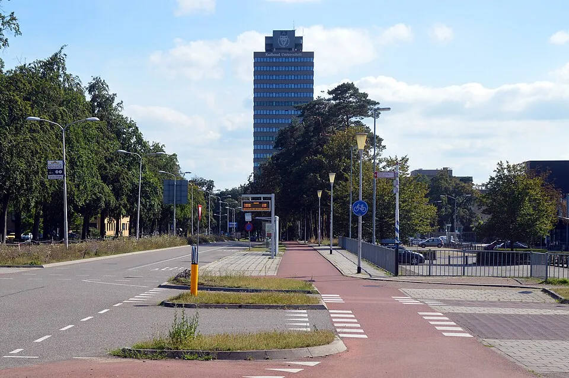
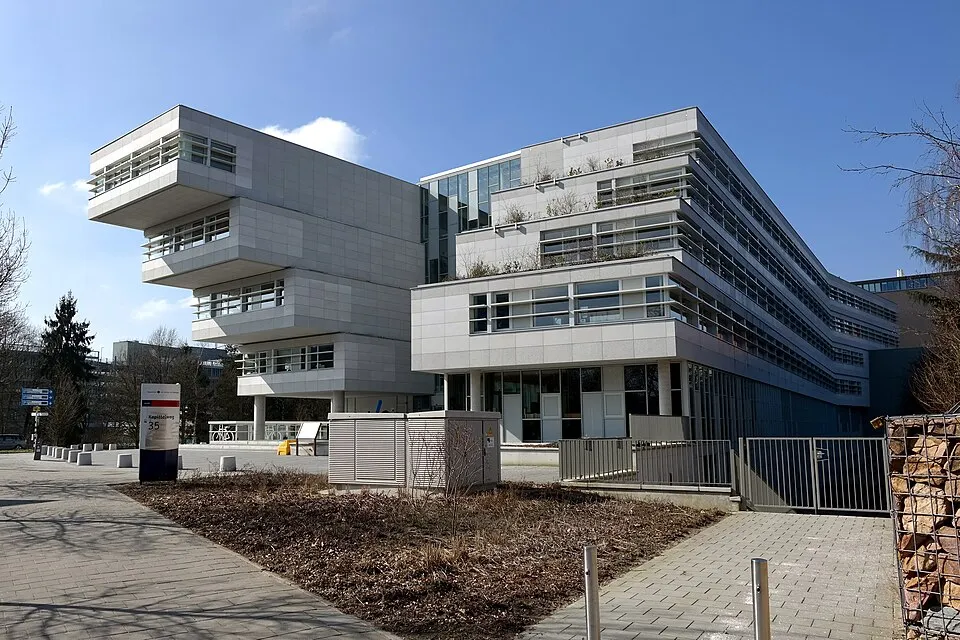

Open dagen in Nijmegen: Radboud, HAN en ROC Nijmegen in 2027
Gepubliceerd op 28 november 2026
Onderdeel van de gids Studeren in Nijmegen
Ga je volgend jaar studeren en twijfel je nog tussen mbo, hbo en universiteit? Dan zijn de open dagen in Nijmegen de beste manier om te kiezen. In deze stad zitten de Radboud Universiteit, de HAN en ROC Nijmegen op een paar kilometer van elkaar. Hier staan alle data voor 2027 op een rij.
Open dagen in Nijmegen in 2027 in het kort
- HAN, extra Open Avond selectie en loting: dinsdag 12 januari 2027
- HAN Open Dag Nijmegen: zaterdag 23 januari 2027, van 10.00 tot 15.00 uur (Arnhem: 30 januari)
- ROC Nijmegen Open Dag: vrijdag 29 januari 2027, van 16.00 tot 20.00 uur
- HAN Open Avond deeltijd en duaal: woensdag 10 maart 2027
- ROC Nijmegen Open Dag: vrijdag 19 maart 2027, van 16.00 tot 18.00 uur
- Radboud Universiteit Bachelor Open Dag: zaterdag 20 maart 2027, van 9.00 tot 16.00 uur
- ROC Nijmegen Info-avond: dinsdag 22 juni 2027, van 18.00 tot 20.00 uur
Data en tijden komen van de websites van de scholen (opgezocht op 28 november 2026). Kijk vlak voor je bezoek nog even op hun eigen site, want soms verschuift er iets.

Radboud Universiteit: de Bachelor Open Dag
De Radboud Universiteit houdt haar Bachelor Open Dag op zaterdag 20 maart 2027 op de campus Heyendaal, aan de zuidkant van de stad. Van alle bacheloropleidingen zijn er voorlichtingsrondes. Daarnaast zijn er presentaties over studiekeuze, het verschil tussen hbo en universiteit en het studentenleven in Nijmegen. Je kunt er ook gewoon met studenten praten. Kun je niet komen? Tot half mei 2027 zijn er online voorlichtingen, en bij veel opleidingen kun je een dag meelopen of proefstuderen.
De campus ligt naast station Nijmegen Heyendaal, één halte vanaf Nijmegen Centraal. Kom je met de auto, houd dan rekening met drukte rond de campus.
HAN: Open Dagen in januari
De Hogeschool van Arnhem en Nijmegen (HAN) houdt haar Open Dag in Nijmegen op zaterdag 23 januari 2027, van 10.00 tot 15.00 uur, op de campus aan de Kapittelweg. Een week later, op 30 januari, is de Open Dag in Arnhem. Kijk dus goed op welke locatie jouw opleiding zit. Op de Open Dag vind je de voltijdopleidingen. Weet je nog niet welke richting je kiest? Er zijn ook voorlichtingen per studierichting, zoals "iets met economie" of "iets met techniek".
Let op: voor opleidingen met selectie of loting moet je je al voor 15 januari aanmelden in Studielink. Daarom is er op dinsdag 12 januari een extra Open Avond voor die opleidingen. Wil je werken en studeren combineren? Dan is de Open Avond voor deeltijd en duaal op woensdag 10 maart 2027 iets voor jou.

ROC Nijmegen: Open Dagen voor het mbo
ROC Nijmegen heeft in 2027 twee Open Dagen: vrijdag 29 januari van 16.00 tot 20.00 uur, en vrijdag 19 maart van 16.00 tot 18.00 uur. Je kunt dan rondkijken op vier locaties: de Campusbaan 6, de Energieweg 25 en de Heyendaalseweg 98 in Nijmegen, en de Begijnenstraat 2 in Boxmeer. Ben je er dan niet bij, dan is er op 22 juni 2027 nog een Info-avond. Ook kun je bij veel mbo-opleidingen een dagje meelopen.
Tips voor een open dag
- Meld je aan. Voor de voorlichtingen moet je je bij de HAN en de Radboud vaak vooraf aanmelden. Zo stel je je eigen programma samen.
- Bezoek er meer dan één. Twijfel je tussen twee opleidingen, of tussen hbo en universiteit? De open dagen liggen zo verspreid dat je ze allemaal kunt bezoeken.
- Schrijf je vragen op. Hoeveel uur les heb je? Hoe ziet de stage eruit? Wat doen oud-studenten nu?
- Praat met studenten. Zij vertellen je eerlijk hoe het is.
- Denk aan 1 mei. Voor de meeste opleidingen meld je je voor 1 mei aan via Studielink. Voor opleidingen met selectie ligt de deadline eerder, op 15 januari.
Kom je van buiten Nijmegen? Lees dan ook hoe je een studentenkamer vindt in Nijmegen. Alles over studeren in de stad staat in onze gids studeren in Nijmegen.
Veelgestelde vragen over open dagen in Nijmegen
Wanneer is de open dag van de Radboud Universiteit?
De volgende Bachelor Open Dag is op zaterdag 20 maart 2027, van 9.00 tot 16.00 uur, op de campus Heyendaal.
Wanneer is de open dag van de HAN in Nijmegen?
Op zaterdag 23 januari 2027 van 10.00 tot 15.00 uur. In Arnhem is de Open Dag op 30 januari.
Wanneer is de open dag van ROC Nijmegen?
Op vrijdag 29 januari 2027 van 16.00 tot 20.00 uur en op vrijdag 19 maart 2027 van 16.00 tot 18.00 uur.